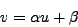
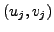

Next: Example: Plane Fitting
Up: The Fast Hough Transform
Previous: The FHT Algorithm
Contents
Example: Line Fitting
Figure 5.5
shows how the FHT works for , when parameter space is a plane,
hyperplanes are straight lines and hypercubes are squares whose associated
hyperspheres are circles passing through the vertices of the squares
(figure 5.5).
This is applicable to the
problem of finding a straight line through points on a plane. If the
plane has coordinates  the line can be written
the line can be written

where and are constant. Each point
 votes for a line in parameter space:
Let the initial ranges of and , defining the root
hypercube, be and
centred around and  respectively.
Then the above equation can put in the form of
equation 5.15 using the transformation
respectively.
Then the above equation can put in the form of
equation 5.15 using the transformation
where
.
Philip McLauchlan
2009-01-27